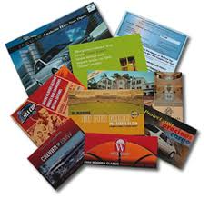

Direct Mail
You can have the most incredible products or services, make the most attractive offer ever, and execute award-winning creative. But, if you’re not getting them in front of the eyes and into the hands of the right audience, your direct response marketing effort will fail.
Competitive Tracking
When it comes to marketing your brand online there is just so much to do. We spend our days researching, creating, implementing, and then measuring the success of our efforts. There are dozens of channels to participate in, and obviously thousands of ways to go about marketing your brand, but however you slice it—online marketing comes down to introducing new audiences to your brand, keeping your current brand users happy, and evolving the brand/company itself.